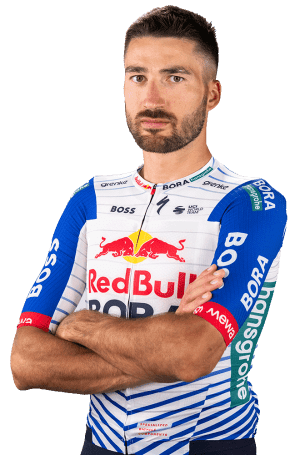

Gianni Moscon
Datos personales
- Gianni Moscon
- 20/04/1994
- Italia
- RED BULL - BORA - HANSGROHE

Datos equipos
- 2025 -> RED BULL - BORA - HANSGROHE
- 2022-2023 -> Astana Qazaqstan Team
- 2021 -> INEOS Grenadiers
- 2020 -> Team INEOS
- 2016-2019 -> Team Sky
- 2014-2015 -> Zalf Euromobil Désirée Fior
Temporada 2025
| Dato | Resultado |
|---|---|
| Podiums | 0 |
| Etapas | 42 |
| Abandonos | 8 |
| Giro d'Italia | 121º |
| Tour de France | 105º |
| Descalificaciones | 1 |
Multimedia
Equipo RED BULL - BORA - HANSGROHE en la Vuelta Ciclista a España 2026.